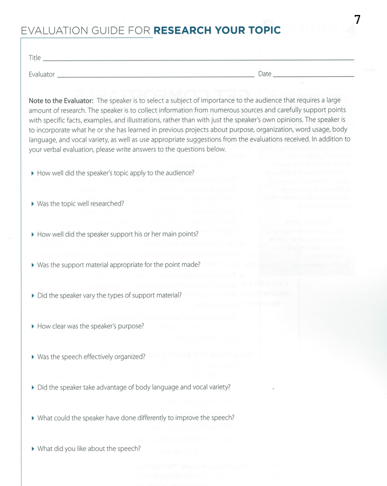

<!-- Main -->
	<div id="main" class="wrapper style1">
		<div class="container">
			<section>
				<div class="10u -1u">
					<header class="major">
						<!-- <h2>Blog</h2> -->
						<!-- <span class="byline">Integer sit amet pede vel arcu aliquet pretium</span> -->
					</header>
					<h2>What is this speech about ?</h2>
					<ul>
						<li>Your speech will be more effective if you can support your main points with statistics, testimony, stories, anecdotes, examples, visual aids and facts.</li>
						<li>You can find this material on the Internet, at a library and in other places. Use information collected from numerous sources and carefully support points with specific facts, examples and illustrations, rather than with just your own opinions.</li>
</ul><br>
<h2>Objectives</h2>
<ul>
<li>Collect information about your topic from numerous sources.</li>
	 <li>Carefully support your points and opinions with specific facts, examples.</li>
	 <li>Carefully support your points and opinions with specific facts, examples
 	and illustrations gathered through research.</li>
	 <li>Time: Five to seven minutes.</li>
</ul><br>
<h2>Evaluation</h2>
Download: <a href="Evaluation7.pdf"></a>
	<br>
	<h2>Example Videos</h2>
	<p align="center">
		<iframe height="500"
		src="https://www.youtube.com/embed/m7rrWMRyS7A">
		</iframe>
		<iframe height="500"
		src="https://www.youtube.com/embed/OexgbOW2YlM">
		</iframe>
	</p>
	<h2>More Resources</h2>
<li><a href="Research_topic.pdf">Resource from Toastmasters Website</a></li>
		<li><a href="http://sixminutes.dlugan.com/toastmasters-speech-7-research-your-topic/">Unoffical guide to speech 7</a></li>
		<li><a href="http://sixminutes.dlugan.com/statistics-speech/">Weaving statistics into your speech</a></li>


				</div>
			</section>
		</div>
	</div>
